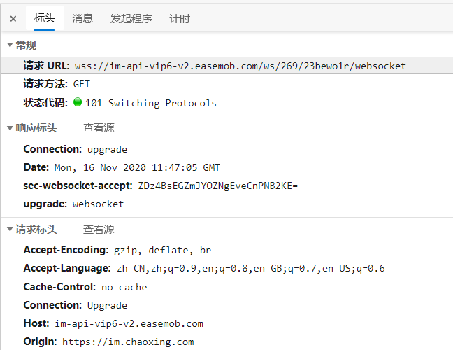
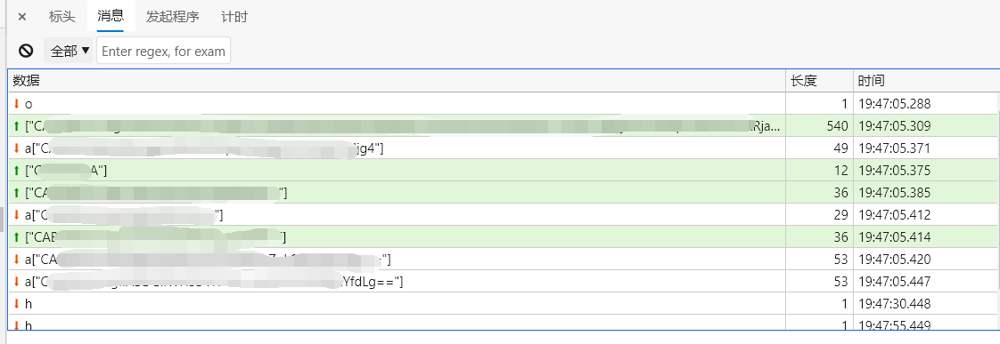
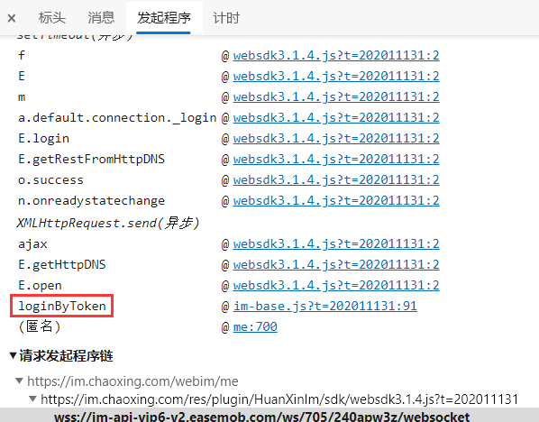
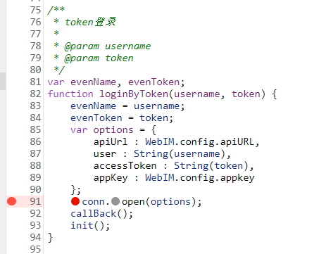
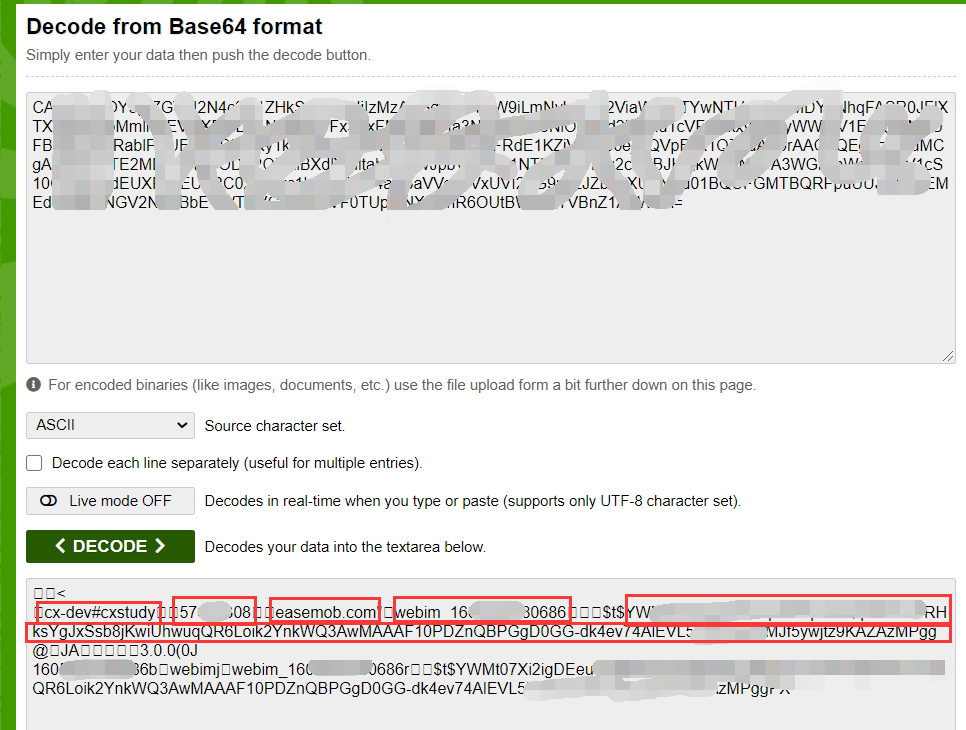

<!DOCTYPE html>
<html>
<head><meta name="generator" content="Hexo 3.9.0">
  <!-- hexo-inject:begin --><!-- hexo-inject:end --><meta charset="utf-8">
  <meta http-equiv="X-UA-Compatible" content="IE=edge">
  
  <title>超星学习通IM协议分析 | uint128&#39;s Blog</title>
  <meta name="description" content="uint128&#39;s blog">
  <meta name="keywords" content="uint128,uint128&#39;s blog,uint128.com">
  <meta name="HandheldFriendly" content="True">
  <meta name="apple-mobile-web-app-capable" content="yes">
  <link rel="shortcut icon" href="/">
  <link rel="alternate" href="/atom.xml" title="uint128's Blog">
  <meta name="viewport" content="width=device-width, initial-scale=1, maximum-scale=1">
  <meta name="description" content="超星学习通IM协议分析。本文仅供学习交流。">
<meta name="keywords" content="uint128,uint128&#39;s blog,uint128.com">
<meta property="og:type" content="article">
<meta property="og:title" content="超星学习通IM协议分析">
<meta property="og:url" content="https://uint128.com/2020/11/16/超星学习通IM协议分析/index.html">
<meta property="og:site_name" content="uint128&#39;s Blog">
<meta property="og:description" content="超星学习通IM协议分析。本文仅供学习交流。">
<meta property="og:locale" content="zh-cn">
<meta property="og:image" content="https://uint128.com/2020/11/16/超星学习通IM协议分析/pic1.png">
<meta property="og:image" content="https://uint128.com/2020/11/16/超星学习通IM协议分析/pic2.png">
<meta property="og:image" content="https://uint128.com/2020/11/16/超星学习通IM协议分析/pic3.png">
<meta property="og:image" content="https://uint128.com/2020/11/16/超星学习通IM协议分析/pic4.png">
<meta property="og:image" content="https://uint128.com/2020/11/16/超星学习通IM协议分析/pic5.png">
<meta property="og:updated_time" content="2020-11-16T13:41:24.208Z">
<meta name="twitter:card" content="summary">
<meta name="twitter:title" content="超星学习通IM协议分析">
<meta name="twitter:description" content="超星学习通IM协议分析。本文仅供学习交流。">
<meta name="twitter:image" content="https://uint128.com/2020/11/16/超星学习通IM协议分析/pic1.png">
    
  <link href="https://fonts.googleapis.com/css?family=Inconsolata|Titillium+Web" rel="stylesheet">
  <link href="https://fonts.googleapis.com/css?family=Roboto+Mono" rel="stylesheet">
  <link href="//cdnjs.cloudflare.com/ajax/libs/node-waves/0.7.5/waves.min.css" rel="stylesheet">
  <link rel="stylesheet" href="/style.css">
  <script>
    function setLoadingBarProgress(num) {
      document.getElementById('loading-bar').style.width=num+"%";
    }
  </script>
  <script src="/js/md5.js"></script>
<link rel="alternate" href="/atom.xml" title="uint128's Blog" type="application/atom+xml"><!-- hexo-inject:begin --><!-- hexo-inject:end -->
</head>
</html>
<body>
  <!-- hexo-inject:begin --><!-- hexo-inject:end --><div id="loading-bar-wrapper">
  <div id="loading-bar"></div>
</div>


  <script>setLoadingBarProgress(20)</script> 
  <header class="l_header">
	<div class='wrapper'>
		<div class="nav-main container container--flex">
			<a class="logo flat-box" href='/' >
				uint128's Blog
			</a>
			<div class='menu'>
				<ul class='h-list'>
					
						<li>
							<a class='flat-box nav-home' href='/'>
								Home
							</a>
						</li>
					
						<li>
							<a class='flat-box nav-archives' href='/archives'>
								Archives
							</a>
						</li>
					
						<li>
							<a class='flat-box nav-about' href='/about'>
								About
							</a>
						</li>
					
				</ul>
				<div class='underline'></div>
			</div>
			
				<div class="m_search">
					<form name="searchform" class="form u-search-form">
						<input type="text" class="input u-search-input" placeholder="Search" />
						<span class="icon icon-search"></span>
					</form>
				</div>
			
			<ul class='switcher h-list'>
				
					<li class='s-search'><a href='javascript:void(0)'><span class="icon icon-search flat-box"></span></a></li>
				
				<li class='s-menu'><a href='javascript:void(0)'><span class="icon icon-menu flat-box"></span></a></li>
			</ul>
		</div>
		
		<div class='nav-sub container container--flex'>
			<a class="logo" class="flat-box" href='javascript:void(0)'>
				Word of Forks
			</a>

			<ul class='switcher h-list'>
				<li class='s-comment'><a href='javascript:void(0)'><span class="icon icon-chat_bubble_outline flat-box"></span></a></li>
				<li class='s-top'><a href='javascript:void(0)'><span class="icon icon-arrow_upward flat-box"></span></a></li>
				<li class='s-toc'><a href='javascript:void(0)'><span class="icon icon-format_list_numbered flat-box"></span></a></li>
			</ul>
		</div>
	</div>
</header>
<aside class="menu-phone">
	<nav>
		
			<a href="/" class="nav-home nav">
				Home
			</a>
		
			<a href="/archives" class="nav-archives nav">
				Archives
			</a>
		
			<a href="/about" class="nav-about nav">
				About
			</a>
		
	</nav>
</aside>

    <script>setLoadingBarProgress(40);</script>
  <div class="l_body">
    <div class='container clearfix'>
      <div class='l_main'>
        <article id="post-超星学习通IM协议分析"
  class="post white-box article-type-post"
  itemscope itemprop="blogPost">
	<section class='meta'>
	<h2 class="title">
  	<a href="/2020/11/16/超星学习通IM协议分析/">
    	超星学习通IM协议分析
    </a>
  </h2>
	<time>
	  11月 16, 2020
	</time>
	
	</section>
	
		<section class="toc-wrapper"></section>
	
	<section class="article typo">
  	<div class="article-entry" itemprop="articleBody">
    	<p>超星学习通IM协议分析。<br>本文仅供学习交流。<br><a id="more"></a></p>
<p>超星学习通的课程签到任务，会第一时间以一条消息的形式发送到课程群聊中。如果能监听课程群聊的消息，就能在第一时间得到最新的签到任务。</p>
<p>当前的学习通自动签到程序，都采用轮询课程任务页面的方式获得课程签到任务。轮询的缺点很明显，频率过高会被反爬虫措施拦截，频率过低很容易错过签到。而监听课程群聊消息的方式，不需要轮询，效率高，灵敏度高，甚至可以做到“秒签到”的效果。（博主的一个实现：<a href="https://github.com/cyanray/cx-auto-sign" target="_blank" rel="noopener">https://github.com/cyanray/cx-auto-sign</a>）</p>
<p>接下来简单分析一下超星学习通的IM协议。</p>
<p>从 Android 端进行分析是比较复杂的，尤其是高版本的 Android 系统，因为证书信任的问题，抓包变得非常困难。</p>
<p>在超星学习通的网页端找了找，很幸运找到了 Web 版本的IM客户端：<a href="https://im.chaoxing.com/webim/me" target="_blank" rel="noopener">https://im.chaoxing.com/webim/me</a></p>
<p>有网页版本的话，工作就轻松多了。按下 F12，打开开发人员工具慢慢分析。</p>
<p>注意到这个页面有个 WebSocket 连接。(如图)在有新消息到达时，这个 WebSocket 连接都会有相应的数据包到达。而且新消息的内容越长，到达的数据包尺寸越大。</p>
<p>所以可以猜测超星学习通的IM协议是基于 WebSocket 协议的。</p>
<p></p>
<p></p>
<p>先不急分析数据包的具体含义，我先去看了看这个 Websocket 的发起程序。发现调用堆栈中最开头有个函数叫 loginByToken。这说明超星的IM协议存在登录部分，而且可以通过一种 Token 登录。</p>
<p>继续分析 loginByToken 函数所在的文件 im-base.js。<del>可以发现这个文件注释齐全，代码规范，逆向分析er大喜。</del> 可以发现里面还有一个 login 函数，参数是用户名和密码，这说明这个IM协议可能还可以直接用账号密码登录。（虽然没什么用）</p>
<p></p>
<p>loginByToken 函数的定义如下：</p>
<figure class="highlight javascript"><table><tr><td class="gutter"><pre><span class="line">1</span><br><span class="line">2</span><br><span class="line">3</span><br><span class="line">4</span><br><span class="line">5</span><br><span class="line">6</span><br><span class="line">7</span><br><span class="line">8</span><br><span class="line">9</span><br><span class="line">10</span><br><span class="line">11</span><br><span class="line">12</span><br><span class="line">13</span><br><span class="line">14</span><br><span class="line">15</span><br><span class="line">16</span><br><span class="line">17</span><br><span class="line">18</span><br><span class="line">19</span><br><span class="line">20</span><br></pre></td><td class="code"><pre><span class="line"><span class="comment">/**</span></span><br><span class="line"><span class="comment"> * token登录</span></span><br><span class="line"><span class="comment"> * </span></span><br><span class="line"><span class="comment"> * @param username</span></span><br><span class="line"><span class="comment"> * @param token</span></span><br><span class="line"><span class="comment"> */</span></span><br><span class="line"><span class="keyword">var</span> evenName, evenToken;</span><br><span class="line"><span class="function"><span class="keyword">function</span> <span class="title">loginByToken</span>(<span class="params">username, token</span>) </span>&#123;</span><br><span class="line">	evenName = username;</span><br><span class="line">	evenToken = token;</span><br><span class="line">	<span class="keyword">var</span> options = &#123;</span><br><span class="line">		apiUrl : WebIM.config.apiURL,</span><br><span class="line">		user : <span class="built_in">String</span>(username),</span><br><span class="line">		accessToken : <span class="built_in">String</span>(token),</span><br><span class="line">		appKey : WebIM.config.appkey</span><br><span class="line">	&#125;;</span><br><span class="line">	conn.open(options);</span><br><span class="line">	callBack();</span><br><span class="line">	init();</span><br><span class="line">&#125;</span><br></pre></td></tr></table></figure>
<p>从这个函数可以了解到要建立这个 WebSocket 连接需要的一些参数。</p>
<p>打个断点，刷新页面，就能看到这些参数的具体内容。搜索之后发现，这些参数基本都能在网页源代码里找到。</p>
<p></p>
<p>继续分析，实际发起 WebScoket 连接的文件是 websdk3.1.4.js。从这个文件的 url (<a href="https://im.chaoxing.com/res/plugin/HuanXinIm/sdk/websdk3.1.4.js" target="_blank" rel="noopener">https://im.chaoxing.com/res/plugin/HuanXinIm/sdk/websdk3.1.4.js</a>) 发现关键词 <strong>HuanXinIm</strong>。百度之后发现是环信IM。原来超星学习通的IM服务是环信IM提供的。</p>
<p>然而环信IM没有提供 dotnet sdk。因此只能继续逆向分析出协议，自己实现了。</p>
<p>返回去分析 WebSocket 的数据包，有个别包以“==”结尾，猜测是 base64 编码。找个解码工具解码看看内容。</p>
<p></p>
<p>几乎是明文的。</p>
<p>图中圈起来的内容分别是：AppKey，uid，固定字符串，环信IM的ID，登录用的Token。</p>
<p>篇幅有限，更多的细节就不再分析了。</p>

  	</div>
	  
		
	
		<div class="art-item-footer">
				
					<span class="art-item-left"><i class="icon icon-chevron-thin-left"></i>prev：<a href="/2020/11/20/C-20新特性之concept/" rel="prev"  title="C++20新特性之concept">
						C++20新特性之concept 
					</a></span>
				
				
					<span class="art-item-right">next：<a href="/2020/09/29/2020深圳杯数模C题简析-无线可充电传感器网络充电路线规划/" rel="next"  title="2020深圳杯数模C题简析:无线可充电传感器网络充电路线规划">
						2020深圳杯数模C题简析:无线可充电传感器网络充电路线规划
					</a><i class="icon icon-chevron-thin-right"></i></span>
				
		</div>
	
	</section>


	

</article>


	<div id="gitalk-container"></div>
	<link rel="stylesheet" href="https://unpkg.com/gitalk/dist/gitalk.css">

<script src="https://unpkg.com/gitalk/dist/gitalk.min.js"></script>

 <script type="text/javascript">
      var gitalk = new Gitalk({
        clientID: '53e3c578fcb7b7b1a4da',
        clientSecret: '74433ee77d6e13fd635b82add519e143ac791726',
        repo: 'cyanray.github.io',
        owner: 'cyanray',
        admin: ['cyanray'],
        id: CryptoJS.MD5(location.pathname).toString(),
        labels: ['Gitalk'],
        perPage: 15,
        pagerDirection: 'last',
        createIssueManually: true,
        distractionFreeMode: false
      })

      gitalk.render('gitalk-container')
 </script>


<script>
	window.subData = {
		title: '超星学习通IM协议分析',
		tools: true
	}
</script>

      </div>
      <aside class='l_side'>
        
  <section class='m_widget about'>
    
            <div class='header'>
                uint128.com
            </div>
            <div class='content'>
                <div class='desc'>uint128, unsigned int.<br>Uint128 Is Not a Type with 128 bits.</div>
            </div>
</section>

  <section class='m_widget links'>
<div class='header'>Links</div>
<div class='content'>
    <ul class="entry">
    
        <li><a class="flat-box" target="_blank" href="https://github.com/cyanray">
            <div class='name'>My Github</div>
        </a></li>
    
        <li><a class="flat-box" target="_blank" href="http://www.cqjtujx.club/">
            <div class='name'>重交计算机协会</div>
        </a></li>
    
        <li><a class="flat-box" target="_blank" href="http://www.h13studio.com/">
            <div class='name'>H13-Studio</div>
        </a></li>
    
        <li><a class="flat-box" target="_blank" href="http://quosimodo.cn/">
            <div class='name'>卡西莫多の礼物</div>
        </a></li>
    
        <li><a class="flat-box" target="_blank" href="http://www.dora-kong.com/">
            <div class='name'>哆啦控 - dora-kong.com</div>
        </a></li>
    
    </ul>
</div>
</section>

      </aside>
      <script>setLoadingBarProgress(60);</script>
    </div>
  </div>
  <footer id="footer" class="clearfix">

	<div class="social-wrapper">
  	
      
        <a href="https://github.com/cyanray" class="social github"
          target="_blank" rel="external">
          <span class="icon icon-github"></span>
        </a>
      
    
  </div>
  
  <div>Theme <a href='https://github.com/stkevintan/hexo-theme-material-flow' class="codename">MaterialFlow</a> designed by <a href="http://keyin.me/" target="_blank">Kevin Tan</a>.</div>
  
</footer>


  <script>setLoadingBarProgress(80);</script>
  

<script src="//apps.bdimg.com/libs/jquery/2.1.4/jquery.min.js"></script>
<script src='//cdnjs.cloudflare.com/ajax/libs/node-waves/0.7.5/waves.min.js'></script>
<script src="//cdnjs.cloudflare.com/ajax/libs/scrollReveal.js/3.3.2/scrollreveal.min.js"></script>
<script src="/js/jquery.fitvids.js"></script>
<script>
	var GOOGLE_CUSTOM_SEARCH_API_KEY = "";
	var GOOGLE_CUSTOM_SEARCH_ENGINE_ID = "";
	var ALGOLIA_API_KEY = "";
	var ALGOLIA_APP_ID = "";
	var ALGOLIA_INDEX_NAME = "";
  var AZURE_SERVICE_NAME = "";
  var AZURE_INDEX_NAME = "";
  var AZURE_QUERY_KEY = "";
  var BAIDU_API_ID = "";
  var SEARCH_SERVICE = "hexo";
  var ROOT = "/"||"/";
  if(!ROOT.endsWith('/'))ROOT += '/';
</script>
<script src="/js/search.js"></script>
<script src="/js/app.js"></script>


  
    <script type="text/x-mathjax-config">
      MathJax.Hub.Config({
          tex2jax: {
            inlineMath: [ ['$','$'], ["\\(","\\)"] ],
            processEscapes: true
          }
        });
      </script>
    
    <script type="text/x-mathjax-config">
      MathJax.Hub.Config({
            tex2jax: {
              skipTags: ['script', 'noscript', 'style', 'textarea', 'pre', 'code']
            }
          });
      </script>
    
    <script type="text/x-mathjax-config">
      MathJax.Hub.Queue(function() {
              var all = MathJax.Hub.getAllJax(), i;
              for(i=0; i < all.length; i += 1) {
                  all[i].SourceElement().parentNode.className += ' has-jax';
              }
          });
      </script>
    
    <script type="text/javascript" src="https://cdnjs.cloudflare.com/ajax/libs/mathjax/2.7.4/MathJax.js?config=TeX-MML-AM_CHTML">
    </script>
    
  <script>setLoadingBarProgress(100);</script><!-- hexo-inject:begin --><!-- Begin: Injected MathJax -->
<script type="text/x-mathjax-config">
  MathJax.Hub.Config("");
</script>

<script type="text/x-mathjax-config">
  MathJax.Hub.Queue(function() {
    var all = MathJax.Hub.getAllJax(), i;
    for(i=0; i < all.length; i += 1) {
      all[i].SourceElement().parentNode.className += ' has-jax';
    }
  });
</script>

<script type="text/javascript" src="https://cdnjs.cloudflare.com/ajax/libs/mathjax/2.7.4/MathJax.js?config=TeX-MML-AM_CHTML">
</script>
<!-- End: Injected MathJax -->
<!-- hexo-inject:end -->
</body>
</html>
